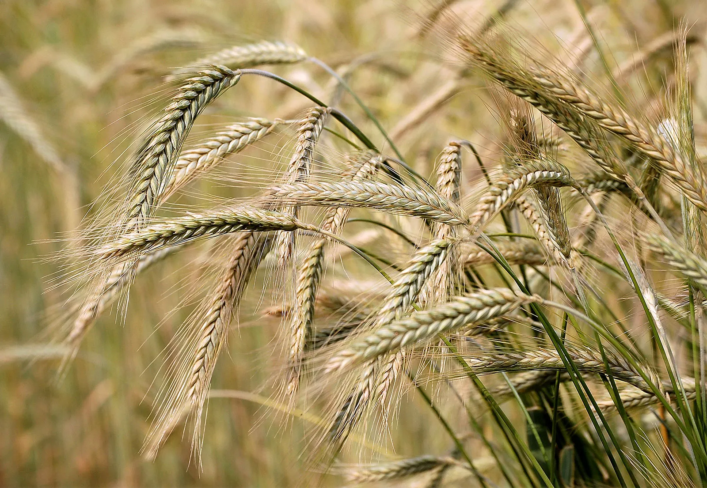

About Mountain Soil
Mountain soils vary by elevation and region — often shallow, well‑drained, acidic to neutral, with variable organic matter. They commonly support orchards, tuber crops, coarse cereals, tea/coffee on slopes and short‑season grains/vegetables adapted to cooler climates.
Crops that commonly grow in mountain soils
Apple (orchard)
Trees per acre (typical high-density): ~150–300 • Time to fruit: 2–5 years

Potato
Seed tuber requirement: ~600–800 kg/acre • Time to harvest: 90–150 days

Barley
Seed rate: ~35–45 kg/acre • Time to harvest: 90–120 days
Maize
Seed rate: ~5–10 kg/acre (depending on spacing) • Time: 90–130 days
Tea
Shade/slope crop — seedlings per acre (approx): ~4,000 (depends on spacing) • Time to first pluck: 3–4 years
Buckwheat
Seed rate: ~20–60 kg/acre (varies by method) • Time: 8–12 weeks
Quick notes on climate & growing duration
- Mountain crops prefer cooler temperatures and often shorter growing seasons; frost dates and elevation determine suitable varieties.
- Orchards (apple, pear) do well in temperate uplands; tubers and coarse grains suit mid‑altitude slopes.
- Tea/coffee require specific temperature and rainfall profiles with good drainage on slopes.